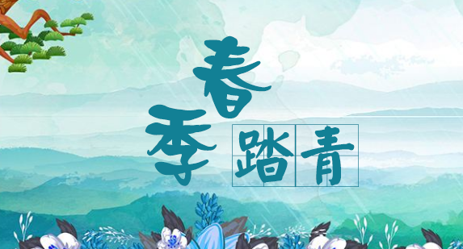

放飞身心，踏青徒步
——第一期员工踏青徒步活动
各位公司同仁：
在阳光明媚、春暖花开的四月，行政文化中心策划了一次踏青徒步活动，让大家有机会在大自然中放松身心，感受大自然独特的魅力。这次活动将于
4月6日
举行，希望大家能够抓住这个机会，脱离喧嚣的城市生活，摆脱繁忙的工作环境，感受大自然的美妙。

1.活动安排
13:00
公司门口集合。
13:30
集体徒步前往目的地。
16:30
活动结束，自由活动。
2.活动须知
各位同事请提前安排好工作，如果因为工作原因不能参加活动的同事，请及时通知行政人事部。
公司为所有参与人员准备好了饮用水、面包、餐布等物品。
请各位同事上衣统一穿着公司T恤，选择方便运动、徒步的鞋子。